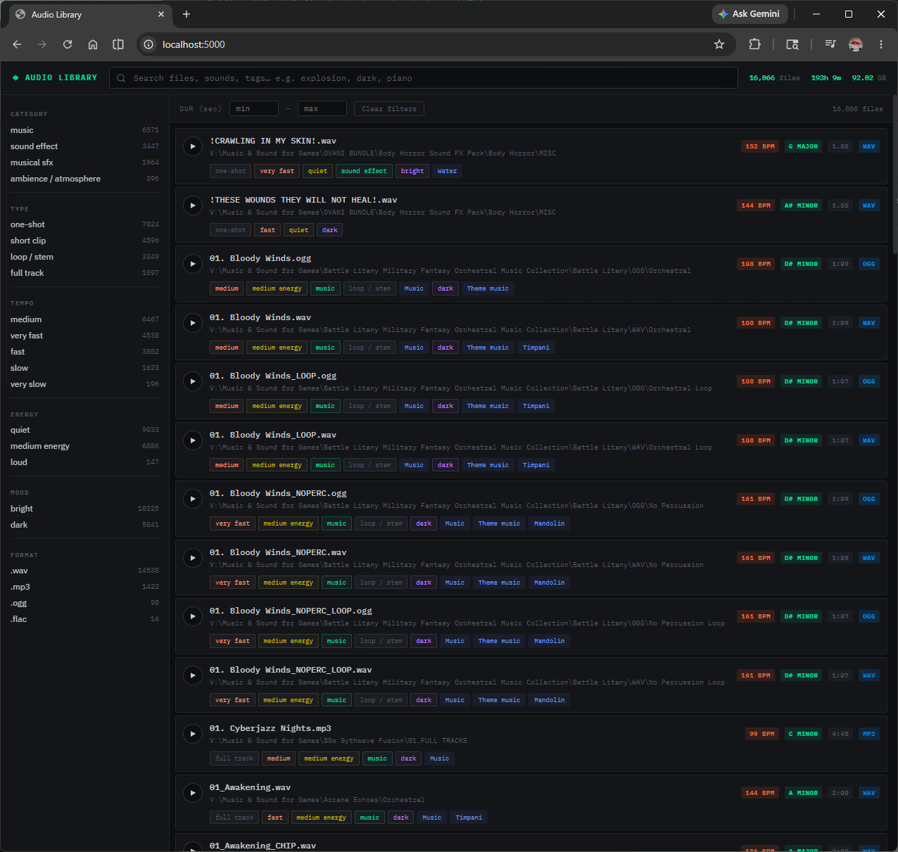
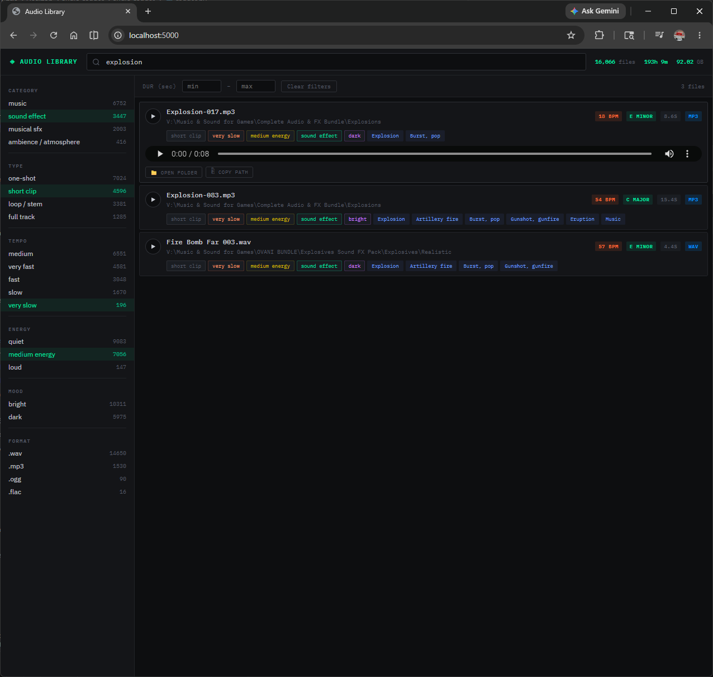
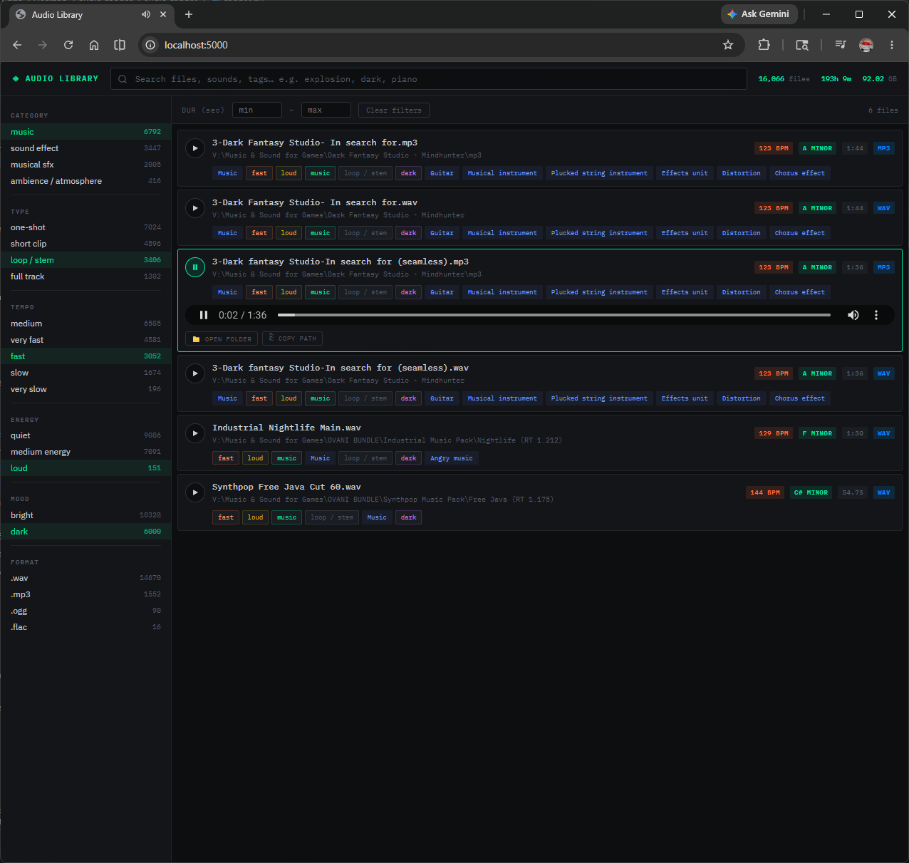
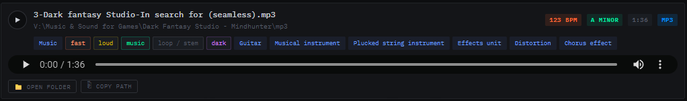

Audio Library
Tagger
AI-powered local audio cataloguing. Scans your entire sound library, classifies 527 sound event categories using GPU-accelerated neural networks, extracts music features, and gives you a fast browser-based search interface — all without uploading a single file to the cloud.

What it does
Audio Library Tagger scans your audio folders recursively and runs two AI systems on every file:
- PANNs (Pretrained Audio Neural Networks) — Google's open-source model trained on 527 AudioSet sound categories. Detects explosions, rain, footsteps, piano, gunshots, crowd noise, engines, and hundreds more with confidence scores.
- librosa feature extraction — Estimates BPM, musical key, loudness, spectral brightness, and zero-crossing rate, then derives semantic tags (tempo, energy, mood, type) from those values.
Everything is stored in a local SQLite database. A lightweight Flask web server lets you search and filter the entire library in your browser — with live audio preview, copy path, and open-in-Explorer functionality.
The web app and the tagger can run simultaneously. Start searching tagged files while the rest of your library is still being processed.
Requirements
A GPU is strongly recommended for large libraries. CPU mode works but is significantly slower — roughly 30–60 seconds per file versus 1–2 seconds on GPU. Use --workers 4 to parallelise on CPU.
Installation
-
Install Python 3.10+
Download from python.org. On Windows, check "Add Python to PATH" during installation.
-
Install PyTorch with CUDA
Check your CUDA version first with
nvidia-smi, then install the matching PyTorch build:PowerShell / Terminalpip install torch torchaudio --index-url https://download.pytorch.org/whl/cu121
Replace
cu121with your CUDA version (e.g.cu118,cu124). -
Install dependencies
PowerShell / Terminalcd audio_tagger pip install -r requirements.txt
-
Download the PANNs model
On Windows, run these in PowerShell to pre-download the model files (avoids a wget issue on first run):
PowerShellNew-Item -ItemType Directory -Force -Path "$env:USERPROFILE\panns_data" Invoke-WebRequest -Uri "https://raw.githubusercontent.com/qiuqiangkong/audioset_tagging_cnn/master/metadata/class_labels_indices.csv" -OutFile "$env:USERPROFILE\panns_data\class_labels_indices.csv" Invoke-WebRequest -Uri "https://zenodo.org/record/3987831/files/Cnn14_mAP%3D0.431.pth" -OutFile "$env:USERPROFILE\panns_data\Cnn14_mAP=0.431.pth"
The model is ~400 MB and only needs to be downloaded once.
Quick Start
Step 1 — Scan your library
python tagger.py --path "D:\Audio\MySoundLibrary"
The tagger walks all subfolders and processes every supported audio file. Progress is shown in the terminal and saved to tagger.log.
If you stop the tagger and restart it, already-processed files are automatically skipped. You can safely stop and resume at any time.
Step 2 — Start the web app
python app.py
Open http://localhost:5000 in your browser. The app can run while the tagger is still processing — results appear as files are tagged.

Scanning Your Library
Command line options
python tagger.py --path "V:\Audio" --workers 1 --db audio_library.db
| Flag | Default | Description |
|---|---|---|
| --path | required | Root folder to scan. All subfolders are included. |
| --workers | 1 | Parallel workers. Keep at 1 for GPU. Increase to 4+ for CPU-only. |
| --db | audio_library.db | Path to the SQLite database file. |
Run the tagger again with a different --path to add more files to the same database. Already-tagged files are skipped regardless of path.
Searching & Filtering

Text search
The search bar performs full-text search across filenames and all AI-generated tags. Try terms like explosion, piano, dark ambient, one-shot, or fast.
Sidebar filters
Click any filter in the sidebar to narrow results by category, type, tempo, energy, mood, or file format. Filters are additive — combine them freely.
Tag pill search
Click any tag pill on a file card to instantly filter by that tag value.
Duration filter
Enter min/max duration in seconds at the top of the results pane to find files of a specific length — useful for isolating one-shots, loops, or full tracks.
File actions
- Play button — previews the file directly in the browser
- Open folder — opens the file location in Explorer / Finder
- Copy path — copies the full file path to clipboard

Tag Reference
Every file receives tags across multiple categories. Here's what each category means and how it's generated.
| Category | Example values | Source |
|---|---|---|
| sound_event | Explosion, Rain, Piano, Gunshot, Dog, Thunder… | PANNs neural network — 527 AudioSet classes with confidence scores |
| category | sound effect, music, ambience / atmosphere, musical sfx | Derived from top PANNs results |
| type | one-shot, short clip, loop / stem, full track | Derived from file duration |
| tempo | very slow, slow, medium, fast, very fast | Derived from librosa BPM estimate |
| energy | quiet, medium energy, loud | Derived from RMS loudness in dB |
| mood | bright, dark | Derived from detected musical key mode (major/minor) |
| texture | tonal, noisy, warm, bright | Derived from spectral centroid and zero-crossing rate |
Music files also display BPM, musical key (e.g. A minor), loudness in dB, sample rate, and channel count in the card header.
Supported Formats
If your library came from a Mac or was distributed as a Mac zip, you may see ._filename files. These are Apple metadata stubs, not real audio. The tagger logs them as errors and skips them — this is expected behaviour.
Performance
| Mode | Speed per file | 10,000 files |
|---|---|---|
| NVIDIA GPU (CUDA) | 1–3 seconds | ~3–8 hours |
| CPU (single worker) | 30–60 seconds | ~80–170 hours |
| CPU (4 workers) | ~15–20 seconds | ~40–55 hours |
For large libraries, start the tagger before you sleep. It's fully resumable — if anything interrupts it, just re-run the same command and it picks up where it left off.
FAQ
Does any data get uploaded to the internet?
No. All analysis runs locally on your machine. The only internet access is the one-time download of the PANNs model (~400 MB) from Zenodo.org.
Can I search while the tagger is still running?
Yes. Start app.py in a second terminal window and open localhost:5000. Files appear in search results as soon as they're tagged.
How do I add more folders to the library?
Run tagger.py again pointing at the new folder. Files are identified by a hash so there's no duplication — already-tagged files are skipped.
I see lots of errors for ._filename files
These are Apple macOS metadata files created when zipping on a Mac. They're not real audio and can be safely ignored. They don't affect real file processing.
The PANNs model failed to load
On Windows, the panns_inference library sometimes tries to use wget which isn't available. Follow the manual model download steps in the Installation section to pre-download the files using PowerShell's built-in Invoke-WebRequest.
Can I run this on macOS or Linux?
Yes. The Open Folder button uses open -R on macOS and xdg-open on Linux automatically. GPU acceleration on macOS requires an NVIDIA GPU via CUDA (most Macs use Apple Silicon — CPU mode is recommended).